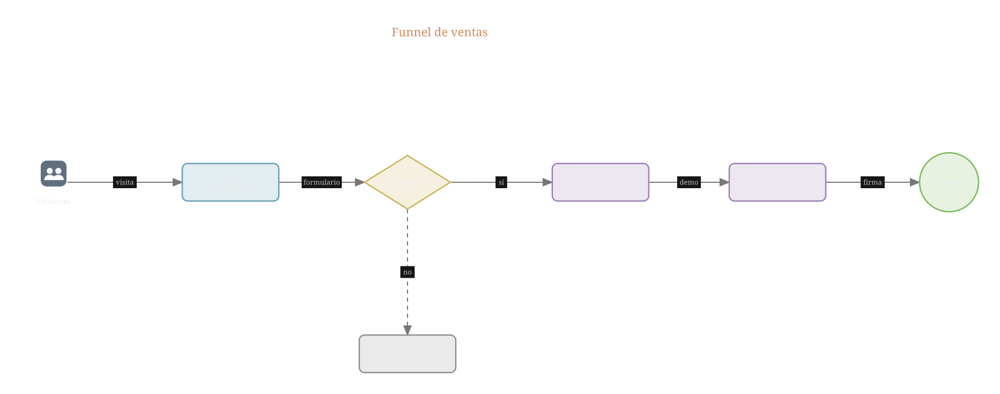

Funnel de ventas
El recorrido comercial completo, del primer visitante a la firma. El rombo ¿Califica? es la pieza que casi nunca se dibuja y es justo la que explica el embudo: separa lo que avanza de lo que se descarta, y deja ver en qué punto se pierde el volumen. Útil para presentarlo a un equipo comercial, o para acordar qué significa exactamente que un lead está calificado.